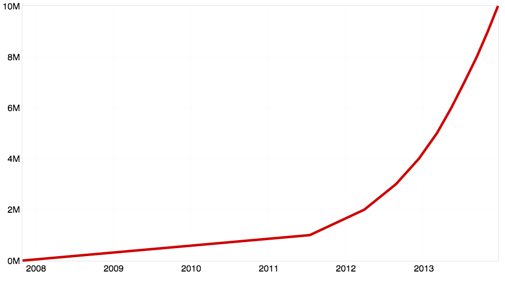

Oscon 2016: System software goes weird
Justin Cormack
Oscon 2016 System software goes weird
Justin Cormack

Hi I am Justin, I am a C programmer
TCP scheduling UDP threading SCSI filesystems NVMe ethernet memory virtualisation
the Cathedral and the Teahouse
Currently Linux has over 25 million lines of code...

... and Windows has 50 million.
25 million lines of C code
Microservices
do one thing really well
small enough and no smaller
Github repositories...

where are the microservices and libraries for system software?
Let’s write system software for a microservice world
Snabb: 10 gigabit ethernet scripting in Lua
Why networking?
- 10Gb networking has shown the limitations of context switching from kernel
- Now 40Gb and 100Gb in servers is becoming standard
- 10Gb line rate is 67.2 ns per packet (smallest packets)
- A cache miss takes 32 ns
- A system call takes around 40 ns (audit disabled)
- When the going gets weird...
Hardware now presents higher level interfaces
- Ring buffers
- Multiple rings (per CPU, virtual CPU or process) so no locking needed
- Virtual functions (SR-IOV) so hardware not shared between applications
- Higher level interfaces in firmware eg NVMe
- More standardisation, single interface for ranges of hardware eg 10Gb-100Gb ethernet
- Open specifications and data sheets
Makes it realistic to write drivers in a language that has:
- Direct access to memory
- Enough performance that modern hardware eg 10Gb+ is realistic
- Avoid memory allocation in inner loops to avoid GC
- Ability to write some code in assembly eg AVX/SSE for checksums as compilers generally do not do a good job
- Access to low level performance debuggin tools
LuaJIT
- Very high performance JIT compiled implementation of Lua
- Zero cost FFI interface to C code or system calls
- Terminates all traffic at Cloudflare for DDoS protection
- Transitioning from an amazing single person project to a community project
Snabb
- Toolkit for building packet processing applications
- tunnelling
- filtering
- routing
pflua
- Fastest implementation of same pf language used by Linux, tcpdump
- LuaJIT trace compilation results in machine code that reflects the actual traffic that your application sees
- Pflua takes advantage of LuaJIT's register allocator and excellent optimizing compiler, whereas e.g. the Linux kernel JIT has a limited optimizer
- Optimises bounds checks by hoisting out of loop
<1--
function PcapFilter:push ()
local i = assert(self.input.input or self.input.rx, "input port not found")
local o = assert(self.output.output or self.output.tx, "output port not found")
while not link.empty(i) do
local p = link.receive(i)
local spec = self.state_table and conntrack.spec(p.data)
if spec and spec:check(self.state_table) then
link.transmit(o, p)
elseif self.accept_fn(p.data, p.length) then
if spec then spec:track(self.state_table) end
link.transmit(o, p)
else
packet.free(p)
end
end
end
-->
Unikernels
- Full application that contains all its system dependencies
- Its own TCP stack
- Its own threading and scheduling, as needed
- Its own memory allocation
- Talk to hardware or virtualised hardware via a VM
- As libraries, not trying to remake Linux or Windows style monoliths
A security hardened container
- No large OS attack surface
- Just what you need, no extra shell or other executables, so small attack surface
- Can run inside virtual machine for sandboxing
- Language guarantees, like type safety and memory safety
- Can use additional sandboxing techniques: ASLR, NaCl etc
- Whole system hardening
- Ideal for embedded systems
Go Rust Swift Lua OCaml JavaScript Haskell Elixir C++ K Forth Lisp Nim D
What language features are useful?
- “Zero cost abstractions” – no point having abstractions if you can‘t use them
- Related, reliable compiler optimisation.
- Predicatability.
Garbage collection
- It has long been said that garbage collection is fatal for system software
- In practise not necessarily true. Do not generate vast emounts of garbage, especially in main loop
- Very few things are actually real time; these need special treatment anyway.
- OCaml and LuaJIT applications manage fine.
- Swift and Rust are the other options...
The Rust promise
- Ownership types - can show in the type system that gc is not needed
- No GC
- No Runtime required
- threads without data races
- As well as zero cost abstractions
Systems programming at Docker
Go hack on systems software!
Questions?
- @justincormack
- justin.cormack@docker.com
docker run -d -P justincormack/oscon2016

Fork me on Github


{kind=link}